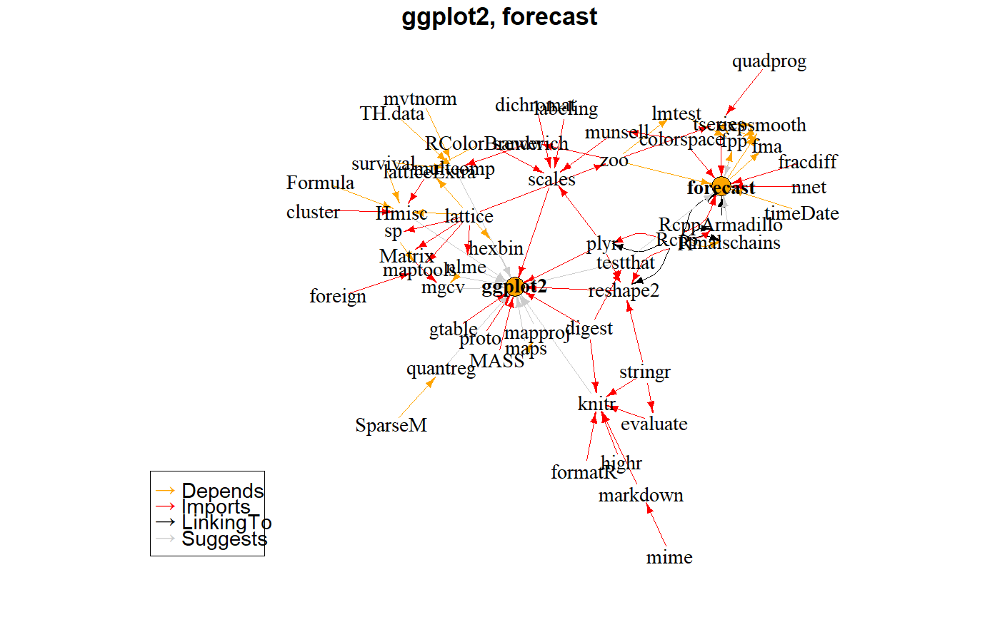

Each package is a node, and a dependency is an edge
makeDepGraph(pkg, availPkgs, repos = getOption("repos"), type = "source", suggests = TRUE, enhances = FALSE, includeBasePkgs = FALSE, ...)
| pkg | Character vector of packages. |
|---|---|
| availPkgs | Vector of available packages. Defaults to reading this list from CRAN, using |
| repos | URL(s) of the 'contrib' sections of the repositories, e.g. |
| type | Possible values are (currently) "source", "mac.binary" and "win.binary": the binary types can be listed and downloaded but not installed on other platforms. Passed to |
| suggests | If TRUE, retrieves Suggests dependencies (non-recursively) |
| enhances | If TRUE, retrieves Enhances dependencies (non-recursively) |
| includeBasePkgs | If TRUE, include base R packages in results |
| ... | Other arguments passed to |
pkgDep() to extract package dependencies
Other dependency functions: basePkgs,
pkgDep, plot.pkgDepGraph
availPkgs <- cranJuly2014# NOT RUN { availPkgs <- pkgAvail( repos = c(CRAN = getOption("minicran.mran")), type = "source" ) # }# Create dependency graph using stored database of available packages p <- makeDepGraph( c("ggplot2", "forecast"), availPkgs = availPkgs ) if(require(igraph)) plot(p)#>#> #>#> #> #>#> #> #>#> #> #>#> Warning: conversion failure on '→' in 'mbcsToSbcs': dot substituted for <e2>#> Warning: conversion failure on '→' in 'mbcsToSbcs': dot substituted for <86>#> Warning: conversion failure on '→' in 'mbcsToSbcs': dot substituted for <92>#> Warning: font metrics unknown for Unicode character U+2192#> Warning: conversion failure on '→' in 'mbcsToSbcs': dot substituted for <e2>#> Warning: conversion failure on '→' in 'mbcsToSbcs': dot substituted for <86>#> Warning: conversion failure on '→' in 'mbcsToSbcs': dot substituted for <92>#> Warning: font metrics unknown for Unicode character U+2192#> Warning: conversion failure on '→' in 'mbcsToSbcs': dot substituted for <e2>#> Warning: conversion failure on '→' in 'mbcsToSbcs': dot substituted for <86>#> Warning: conversion failure on '→' in 'mbcsToSbcs': dot substituted for <92>#> Warning: font metrics unknown for Unicode character U+2192#> Warning: conversion failure on '→' in 'mbcsToSbcs': dot substituted for <e2>#> Warning: conversion failure on '→' in 'mbcsToSbcs': dot substituted for <86>#> Warning: conversion failure on '→' in 'mbcsToSbcs': dot substituted for <92>#> Warning: font metrics unknown for Unicode character U+2192# NOT RUN { # Create dependency graph using newly retrieved database from CRAN p <- makeDepGraph( c("ggplot2", "forecast"), repos = c(CRAN = getOption("minicran.mran")), type = "source" ) if(require(igraph)) plot(p) # }